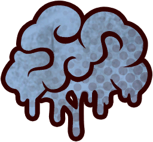
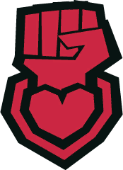
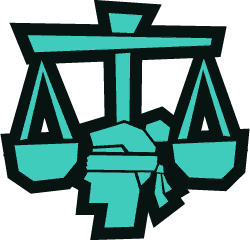
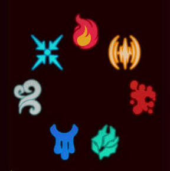
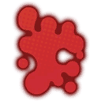
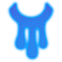
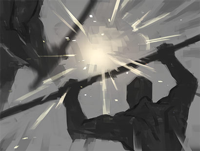
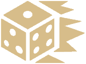
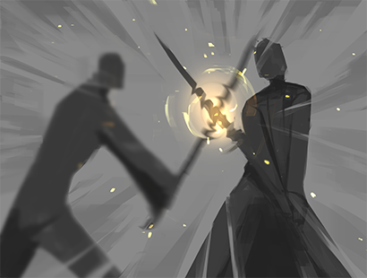
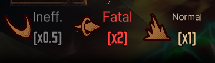

ww<!DOCTYPE html>
<html lang="es">
<head>
    <meta charset="UTF-8">
    <meta name="viewport" content="width=device-width, initial-scale=1.0">
    <title>CLASH - Pulperian Edition</title>
    <style>
        :root {
            --bg-color: #0d0d0d;
            --panel-bg: #161616;
            --accent-red: #8b0000;
            --accent-gold: #c5a059;
            --text-main: #e0e0e0;
            --text-muted: #888888;
            --border-color: #333333;
        }

        * {
            box-sizing: border-box;
            margin: 0;
            padding: 0;
        }

        body {
            background-color: var(--bg-color);
            color: var(--text-main);
            font-family: 'Segoe UI', Tahoma, Geneva, Verdana, sans-serif;
            line-height: 1.6;
            display: flex;
            height: 100vh;
            overflow: hidden;
        }

        /* Sidebar Navigation */
        nav {
            width: 320px;
            background-color: var(--panel-bg);
            border-right: 2px solid var(--border-color);
            display: flex;
            flex-direction: column;
            height: 100%;
        }

        .nav-header {
            padding: 20px;
            background-color: #111;
            border-bottom: 2px solid var(--border-color);
            text-align: center;
        }

        .nav-header h1 {
            font-size: 1.4rem;
            color: var(--accent-gold);
            letter-spacing: 2px;
        }

        .nav-links {
            overflow-y: auto;
            flex: 1;
            padding: 15px;
        }

        .nav-section-title {
            font-size: 0.85rem;
            color: var(--accent-red);
            text-transform: uppercase;
            letter-spacing: 1px;
            margin: 15px 0 5px 5px;
            font-weight: bold;
        }

        .nav-links ul {
            list-style: none;
        }

        .nav-links li {
            margin-bottom: 4px;
        }

        .nav-links a {
            display: block;
            padding: 8px 12px;
            color: var(--text-muted);
            text-decoration: none;
            border-radius: 4px;
            transition: all 0.2s ease;
            font-size: 0.95rem;
        }

        .nav-links a:hover, .nav-links a.active {
            background-color: var(--accent-red);
            color: #fff;
            transform: translateX(4px);
        }

        /* Main Content Viewer */
        main {
            flex: 1;
            padding: 40px;
            overflow-y: auto;
            height: 100%;
            background: radial-gradient(circle at center, #141414 0%, #080808 100%);
        }

        .content-container {
            max-width: 900px;
            margin: 0 auto;
            background-color: rgba(22, 22, 22, 0.85);
            border: 1px solid var(--border-color);
            padding: 40px;
            box-shadow: 0 10px 30px rgba(0, 0, 0, 0.8);
            border-radius: 4px;
        }

        h1, h2, h3, h4 {
            color: var(--accent-gold);
            margin-bottom: 20px;
            border-bottom: 1px solid var(--border-color);
            padding-bottom: 8px;
        }

        h1 { font-size: 2.2rem; }
        h2 { font-size: 1.6rem; margin-top: 30px; }
        h3 { font-size: 1.2rem; margin-top: 20px; border-bottom: none; }

        p {
            margin-bottom: 15px;
            color: var(--text-main);
        }

        ul, ol {
            margin-bottom: 20px;
            padding-left: 25px;
        }

        li {
            margin-bottom: 8px;
        }

        img {
            max-width: 100%;
            height: auto;
            display: block;
            margin: 25px auto;
            border: 1px solid var(--border-color);
            box-shadow: 0 4px 15px rgba(0,0,0,0.5);
        }

        table {
            width: 100%;
            border-collapse: collapse;
            margin: 25px 0;
            background-color: #111;
        }

        th, td {
            border: 1px solid var(--border-color);
            padding: 12px;
            text-align: left;
        }

        th {
            background-color: #1b1b1b;
            color: var(--accent-gold);
        }

        blockquote {
            border-left: 4px solid var(--accent-red);
            padding: 12px 20px;
            margin: 20px 0;
            background-color: rgba(139, 0, 0, 0.05);
            color: #ccc;
        }

        /* Scrollbar styling */
        ::-webkit-scrollbar {
            width: 8px;
        }
        ::-webkit-scrollbar-track {
            background: #0d0d0d;
        }
        ::-webkit-scrollbar-thumb {
            background: #333;
            border-radius: 4px;
        }
        ::-webkit-scrollbar-thumb:hover {
            background: #555;
        }
    </style>
</head>
<body>

    <!-- SIDEBAR DE NAVEGACIÓN -->
    <nav>
        <div class="nav-header">
            <h1>CLASH</h1>
            <p style="font-size:0.75rem; color:var(--text-muted);">Pulperian Edition</p>
        </div>
        <div class="nav-links">
            <div class="nav-section-title">General</div>
            <ul>
                <li><a href="#" onclick="loadContent('00-Cover')">Portada</a></li>
                <li><a href="#" onclick="loadContent('01-Introduction')">Introducción</a></li>
                <li><a href="#" onclick="loadContent('02-La_Ciudad')">La Ciudad</a></li>
                <li><a href="#" onclick="loadContent('02a-La_Cabeza')">La Cabeza</a></li>
            </ul>

            <div class="nav-section-title">Personajes y Stats</div>
            <ul>
                <li><a href="#" onclick="loadContent('03-Componentes_Personaje')">Componentes de PJ</a></li>
                <li><a href="#" onclick="loadContent('03a-Fortitude')">Fortaleza</a></li>
                <li><a href="#" onclick="loadContent('03b-Prudence')">Prudencia</a></li>
                <li><a href="#" onclick="loadContent('03c-Temperance')">Templanza</a></li>
                <li><a href="#" onclick="loadContent('03d-Justice')">Justicia</a></li>
                <li><a href="#" onclick="loadContent('05-Creando_Personaje')">Creando tu PJ</a></li>
            </ul>

            <div class="nav-section-title">Efectos de Estado (E.E)</div>
            <ul>
                <li><a href="#" onclick="loadContent('03EX-Status')">Estados General</a></li>
                <li><a href="#" onclick="loadContent('03EXa-Bleed')">Sangrado</a></li>
                <li><a href="#" onclick="loadContent('03EXb-Burn')">Quemadura</a></li>
                <li><a href="#" onclick="loadContent('03EXc-Rupture')">Ruptura</a></li>
                <li><a href="#" onclick="loadContent('03EXd-Sinking')">Ahogo</a></li>
                <li><a href="#" onclick="loadContent('03EXe-Tremor')">Tremor</a></li>
                <li><a href="#" onclick="loadContent('03EXf-Poise')">Postura</a></li>
                <li><a href="#" onclick="loadContent('03EXg-Charge')">Carga</a></li>
            </ul>

            <div class="nav-section-title">Sistema de Combate</div>
            <ul>
                <li><a href="#" onclick="loadContent('04Aa-Combate')">El Sistema de Clash</a></li>
                <li><a href="#" onclick="loadContent('04Ab-CombatStart')">El Flujo</a></li>
                <li><a href="#" onclick="loadContent('04Ac-Attacks')">Armando un Ataque</a></li>
                <li><a href="#" onclick="loadContent('04Ad-OffensiveDice')">Acciones Ofensivas</a></li>
                <li><a href="#" onclick="loadContent('04Ae-EmotionLevel')">Nivel de Emoción</a></li>
                <li><a href="#" onclick="loadContent('04Ba-Otros')">Otros Chequeos</a></li>
            </ul>
        </div>
    </nav>

    <!-- VISOR DE CONTENIDO -->
    <main>
        <div class="content-container" id="viewer">
            <!-- Contenido dinámico inyectado por JS -->
        </div>
    </main>

    <script>
        const database = {
            "00-Cover": `
                <h1>CLASH - Pulperian Edition</h1>
                
            `,
            "01-Introduction": `
                <h1>Introducción</h1>
                
                <p>Creado por Project Moon y siendo el mundo donde sus tres juegos (Lobotomy Corporation, Library of Ruina y Limbus Company) y otras obras toman lugar, La Ciudad es un ambiente brutal donde la muerte y violencia son ocurrencias diarias, y donde tomará lugar CLASH[cite: 24].</p>
                <p>La Ciudad como escenario está repleto de detalles, reglas, distintas culturas / costumbres y fascinantes formas de morir de las formas más dolorosas posibles, pero en lo que concierne a esta introducción y para decirlo de forma resumida: La Ciudad es un universo hyper-mega-capitalista (con simbolismo tan sútil como una patada en las bolas) donde las corporaciones controlan la sociedad (cada una con una tecnología característica que la hace mantenerse relevante), la tecnología es increíblemente avanzada al punto de que hay poca diferenciacion con la magia, se combate a punta de espadas y aumentos / prótesis quirúrgicas para volverse más poderoso, y siempre hay alguien que te puede y va a zurrar. Las armas de fuego son raras de ver y las municiones carísimas e ineficientes, la gente en pobreza sufre de formas horribles, y tú empleo (un Fixer) tiene un indice de mortalidad rídiculo. El hecho de que aun así hayan miles y miles de nuevos Fixers constantemente es solo evidencia de lo horrible que es ser pobre en La Ciudad[cite: 24].</p>
                
                <p><em>Un Fixer de Grado 9.[cite: 24]</em></p>
                <p>En este mundo, tu eres un Fixer, un tipo de trabajador que se presta para un amplio rango de contratos a lo largo de La Ciudad, desde simples trabajos de quehaceres hasta combate / asesinatos. Si alguien quiere algo hecho en la ciudad, se llama a un Fixer. Suena libre y con bastante libertad de trabajo, pero lo más probable es que todo Fixer termine trabajando para una Oficina de Fixers que este, a su misma, atada a una Asociación, dando poca / nada libertad al estar bajo ordenes de alguien más arriba en el totém de relevancia. Las mas grandes aspiraciones de un Fixer es subir de Grado (9 siendo el más bajo, 1 siendo el top y un título de Color siendo el pináculo absoluto)[cite: 24].</p>
                <p>Osea, no más diferente que otro ambiente corporativo más[cite: 24].</p>
                <p>Si te interesa este setting, se profundizará más en las siguientes páginas. Si te importa una absoluta mierda entonces salta al capitulo referido a los personajes[cite: 24].</p>
            `,
            "02-La_Ciudad": `
                <h1>La Ciudad</h1>
                
                <p>La Ciudad es un complejo urbano masivo del tamaño de un país (en lore un país pequeño; para propósitos de este TTRPG un país grande), y una población de alrededor de 7 billones de personas todas viviendo ahí. Aquí las Corporaciones mandan, y el capitalismo ganó a un nivel absurdo, al punto que ellas dictan todas las reglas, leyes, y normativas. La Ciudad, por regimiento de La Cabeza (entidad que veremos después) es un entorno SOLO para humanos, donde cualquier entidad no-humana es inmediatamente exterminada o exiliada a Las Afueras[cite: 25].</p>
                
                <h2>Distrito:</h2>
                
                <p>Un Distrito (numerados del 1 al 25) es un territorio masivo de tierra, gobernado por un <strong>Ala</strong>, cada cual con sus propias culturas únicas, normas, leyes, y ambientes. Cada Distrito esta dividido entre <strong>Nido</strong> y <strong>Callejones</strong>, las cuales tienen calidades de vida drásticamente distintas, también siendo diferentes visualmente, pero aún así operan bajo la misma cultura y estética de el Distrito en general[cite: 25].</p>
                <p>Existe un Distrito 26, pero no se muestra en el mapa. No preguntes sobre el Distrito 26[cite: 25].</p>

                <h3>Nido:</h3>
                
                <p><em>Nido de K. Corp.[cite: 25]</em></p>
                <p>Un Nido es una porción segregada de un Distrito, controlado por una de las <strong>Alas</strong>. Estas areas son tipicamente mas afluentes, teniendo más dinero, y con una calidad de vida mayor cuando es comparado directamente con los <strong>Callejones</strong>. La población principal de un Nido está compuesto de ciudadanos de clases más altas, aquellos que se les permite entrar gracias a las leyes del Distrito y los empleados de las <strong>Alas</strong> ("las plumas" de un Ala)[cite: 25].</p>

                <h3>Callejones:</h3>
                
                <p>Los Callejones son las areas de un Distrito que no esta incluido en el Nido de un Ala[cite: 25].</p>
                <p>Son areas peligrosas, donde la pobreza abunda de forma enorme y no existe ningún tipo de protección civil. Son caóticas, sin mantención, y el peligro de muerte es altísimo. El sueño de la gran mayoría de la población de los Callejones es poder trabajar tan arduamente que puedan entrar y vivir dentro de los territorios del Nido[cite: 25].</p>
                <p>Los Sindicatos más grandes y poderosos son conocidos como <strong>Los Dedos de los Callejones</strong>: <strong>El Índice, El Medio, El Anillo, El Pulgar, y El Meñique</strong>[cite: 25].</p>
                <p>En los Callejones ocurre todas las noches "La Noche de los Callejones" (3:14 A.M. a 4:34 A.M.), donde los <strong>Barredores</strong> limpian absolutamente todo lo que hay fuera de los edificios[cite: 25].</p>
                
                <p><em>Un Barredor[cite: 25]</em></p>

                <h2>Ala</h2>
                
                <p>Las <strong>Alas</strong> son los 26 conglomerados más grandes y poderosos en La Ciudad, gobernando sus respectivos <strong>Nidos</strong>[cite: 25].</p>
            `,
            "02a-La_Cabeza": `
                <h1>La Cabeza</h1>
                <p>La entidad suprema de La Ciudad, que gobierna todo y cada uno de los territorios, Nido o Callejón. Apoyada por El Ojo y La Garra[cite: 26].</p>
                
                <h3>Taboos of the City</h3>
                <ul>
                    <li>Resurrecting the dead in body and mind</li>
                    <li>Taboos dictated by the Artificial Intelligence Ethics Amendment</li>
                    <li>Destruction or violation of a residential area during the Night in the Backstreets</li>
                    <li>Not paying taxes</li>
                    <li>Not respecting restrictions on the creation and distribution of firearms</li>
                    <li>No explosive bombs can be thrown</li>
                </ul>

                <h2>Arbitros:</h2>
                
                <p><em>Una Árbitro.[cite: 26]</em></p>
                <p>Agentes de la Cabeza, el pináculo del poder. Capaces de derrotar a un Ala entera[cite: 26].</p>

                <h2>La Garra:</h2>
                
                <p><em>Un Ejecutor de La Garra[cite: 26]</em></p>
                <p>Encargados de castigar a los que rompen los Taboos menores de La Cabeza[cite: 26].</p>

                <h2>El Ojo</h2>
                
                <p>Monitorean a los habitantes de la Ciudad[cite: 26].</p>
            `,
            "03-Componentes_Personaje": `
                <h1>Componentes de un Personaje</h1>
                <p>Un personaje de CLASH tiene 4 atributos principales basados en Lobotomy Corporation: <strong>Fortaleza, Prudencia, Templanza y Justicia</strong>[cite: 13].</p>
                
                <ul>
                    <li><strong>HP:</strong> Controla tu vida. Escala con Fortaleza: <br><code>HP = 40 + 5 * Fortaleza²</code></li>
                </ul>
                

                <ul>
                    <li><strong>Stagger Bar:</strong> Controla tu estabilidad física. Escala con Resistencia: <br><code>Stagger = 30 + 4 * Resistencia²</code></li>
                </ul>
                

                <ul>
                    <li><strong>SP (Sanity Points):</strong> Máximo 45, mínimo -45. Determina tu cordura y vulnerabilidad a la corrupción o Distorsión[cite: 13].</li>
                </ul>
                
            `,
            "03a-Fortitude": `
                <h1>Fortaleza</h1>
                
                <p>Mide todo lo que implique cuerpo: dureza, tolerancia al dolor y HP[cite: 14].</p>
                <h3>Físico</h3>
                <p>Destreza física, fuerza para levantar objetos pesados y manejo de armas grandes[cite: 14].</p>
                <h3>Resistencia</h3>
                <p>Capacidad de persistir, tolerar dolor y dictar tu barra de aturdimiento[cite: 14].</p>
            `,
            "03b-Prudence": `
                <h1>Prudencia</h1>
                
                <p>Mide la mente y cómo esta procesa la información. Dicta tu SP[cite: 15].</p>
                <h3>Comprensión</h3>
                <p>Comprender lo incomprensible, recordar información, desarrollar planes[cite: 15].</p>
                <h3>Calma</h3>
                <p>Regulación de emociones, estabilidad mental ante los horrores[cite: 15].</p>
            `,
            "03c-Temperance": `
                <h1>Templanza</h1>
                
                <p>Mide la intuición y cómo el flujo de la vida se traduce en acciones[cite: 16].</p>
                <h3>Intuición</h3>
                <p>Escuchar lo inaudito, sexto sentido en combate, predecir ataques[cite: 16].</p>
                <h3>Convicción</h3>
                <p>Persuadir, mentir e influenciar a otros[cite: 16].</p>
            `,
            "03d-Justice": `
                <h1>Justicia</h1>
                
                <p>Dicta la velocidad del cuerpo en reflejos y sentidos[cite: 17].</p>
                <h3>Reflejos</h3>
                <p>Velocidad de reacción, esquivar golpes, actuar primero[cite: 17].</p>
                <h3>Enfoque</h3>
                <p>Aprovechar el momento para maximizar la aplicación de E.E[cite: 17].</p>
            `,
            "05-Creando_Personaje": `
                <h1>Creando tu PJ</h1>
                <p>En CLASH tu personaje puede morir de forma repentina y horrible. Ten un personaje de repuesto listo[cite: 12].</p>
                <h2>Asignando STATS</h2>
                <p>Todos empiezan con base 1 en atributos mayores y un presupuesto de <strong>5 puntos</strong> para repartir[cite: 12].</p>
                <h2>Escogiendo E.E</h2>
                <p>Sangrado, Quemadura, Ruptura, Ahogo, Tremor, Postura o Carga[cite: 12].</p>
            `,
            "03EX-Status": `
                <h1>Estados de Efecto (E.E)</h1>
                
                <p>Los E.E funcionan con el formato: <strong>Potencia / Cuenta</strong>[cite: 18].</p>
            `,
            "03EXa-Bleed": `
                <h1>Sangrado</h1>
                
                <p>Cada vez que el afligido realice una acción (Atacar, Clash, Defender, Mover) recibe daño fijo igual a la Potencia, sin tomar en cuenta resistencias[cite: 19].</p>
            `,
            "03EXb-Burn": `
                <h1>Quemadura</h1>
                
                <p>Cada vez que finaliza un turno, el afligido recibe daño fijo igual a la Potencia[cite: 20].</p>
            `,
            "03EXc-Rupture": `
                <h1>Ruptura</h1>
                
                <p>Cada vez que reciba daño, recibe daño fijo adicional igual a la Potencia de Ruptura, consumiendo 1 de la Cuenta[cite: 3].</p>
            `,
            "03EXd-Sinking": `
                <h1>Ahogo</h1>
                
                <p>Arruina la Sanidad de los oponentes. Si llega a -45, el daño de Sanidad se transforma en daño fijo de Melancolía[cite: 4].</p>
            `,
            "03EXe-Tremor": `
                <h1>Tremor</h1>
                
                <p>Desestabiliza al oponente aplicando un <strong>Estallido de Tremor</strong> para dañar su Stagger Bar[cite: 5].</p>
            `,
            "03EXf-Poise": `
                <h1>Postura</h1>
                
                <p>Otorga la cualidad de infligir daño crítico (+20% daño). Chance de Crítico = Potencia * 5[cite: 6].</p>
            `,
            "03EXg-Charge": `
                <h1>Carga</h1>
                
                <p>Acumula cargas a lo largo de múltiples turnos para desatar un ataque devastador consumiendo la cuenta[cite: 7].</p>
            `,
            "04Aa-Combate": `
                <h1>El Sistema de CLASH</h1>
                
                <p>No existe combate por turnos tradicional. Las entidades se mueven a la vez y si dos ataques se encuentran, se produce un <strong>CLASH</strong>. El perdedor cancela su ataque[cite: 8].</p>
            `,
            "04Ab-CombatStart": `
                <h1>El Flujo del Combate</h1>
                
                <p>Inicia con la Fase de Declaración (tirando velocidad <code>1d4 + (Reflejos + Físico)</code>), Fase de Sanidad, y Fase de Clash[cite: 21].</p>
                
            `,
            "04Ac-Attacks": `
                <h1>Armando un ATAQUE</h1>
                <table>
                    <tr><th>N° de Acciones</th><th>Dados</th></tr>
                    <tr><td>1</td><td>1d20[cite: 22]</td></tr>
                    <tr><td>2</td><td>1d12[cite: 22]</td></tr>
                    <tr><td>3</td><td>1d8[cite: 22]</td></tr>
                    <tr><td>4</td><td>1d6[cite: 22]</td></tr>
                </table>
                
                <p><em>Ejemplo de un ataque inmodificable.[cite: 22]</em></p>
            `,
            "04Ad-OffensiveDice": `
                <h1>Acciones Ofensivas y Resistencias</h1>
                
                <table>
                    <tr><th>Afinidad</th><th>Multiplicador</th></tr>
                    <tr><td>Fatal</td><td>×2[cite: 9]</td></tr>
                    <tr><td>Débil</td><td>×1.5[cite: 9]</td></tr>
                    <tr><td>Normal</td><td>×1[cite: 9]</td></tr>
                    <tr><td>Resistente</td><td>×0.5[cite: 9]</td></tr>
                    <tr><td>Inmune</td><td>×0.25[cite: 9]</td></tr>
                </table>
            `,
            "04Ae-EmotionLevel": `
                <h1>Nivel de Emoción</h1>
                
                <p>Al acumular eventos (ganar clashes, hacer daño máximo/mínimo, matar enemigos), el personaje sube su Nivel de Emoción ganando Slots de Acción adicionales[cite: 10].</p>
            `,
            "04Ba-Otros": `
                <h1>Otros Chequeos (Tabla de Dificultad)</h1>
                <table>
                    <tr><th>Dificultad</th><th>Valor Objetivo (d20+Skill ≥)</th></tr>
                    <tr><td>Trivial</td><td>5[cite: 11]</td></tr>
                    <tr><td>Fácil</td><td>10[cite: 11]</td></tr>
                    <tr><td>Moderada</td><td>15[cite: 11]</td></tr>
                    <tr><td>Difícil</td><td>20[cite: 11]</td></tr>
                    <tr><td>Muy Difícil</td><td>25[cite: 11]</td></tr>
                    <tr><td>Extrema</td><td>30[cite: 11]</td></tr>
                    <tr><td>Caso Perdido</td><td>35+[cite: 11]</td></tr>
                </table>
            `
        };

        function loadContent(key) {
            const viewer = document.getElementById('viewer');
            if (database[key]) {
                viewer.innerHTML = database[key];
                viewer.scrollTop = 0;
            } else {
                viewer.innerHTML = "<h1>Error</h1><p>Contenido no encontrado.</p>";
            }
            
            // Actualizar clases activas
            document.querySelectorAll('.nav-links a').forEach(a => a.classList.remove('active'));
            event.target.classList.add('active');
        }

        // Cargar portada por defecto al iniciar
        window.onload = function() {
            loadContent('00-Cover');
            document.querySelector('.nav-links a').classList.add('active');
        };
    </script>
</body>
</html>
